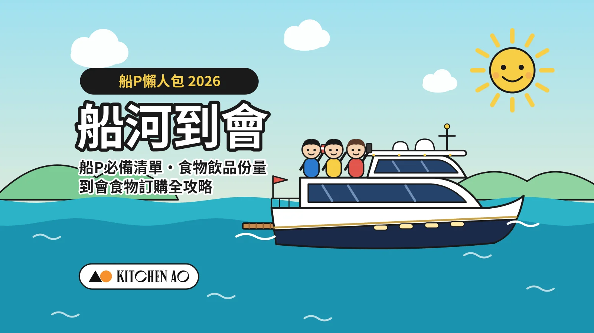
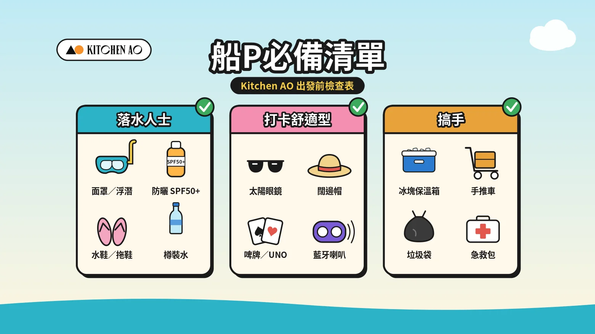
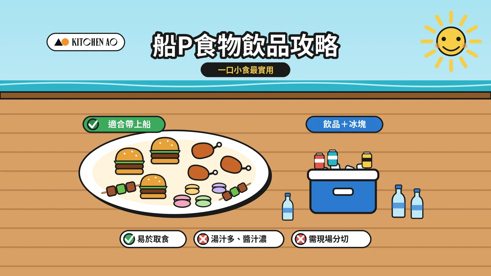

預覽用：以下 H1 為 WordPress 文章標題（貼文時唔使貼）
船河到會 2026｜船P必備清單、食物飲品份量、到會食物訂購全攻略

出海舉行船河派對，除了預訂船隻，最花心思的往往是物資與餐飲安排。本文由出發前的船P必備清單、食物選擇與份量、飲品冰塊，以及碼頭交收流程逐一整理，並附船河到會套餐推介，是一份適合搞手收藏的船P懶人包。
船P準備：遊船河出發前要準備什麼？
船P的準備可分為個人物品及全船共用物資兩部分，而個人物品則視乎參加者的玩法而有所不同。有人一上船便換上泳衣準備浮潛，亦有人只想在甲板上曬太陽、拍照聊天。下表按「落水人士」、「打卡舒適型」及「搞手」三類整理船P必備清單，出發前逐項核對，便可避免在海中心才發現遺漏。
船P必備清單：落水人士、打卡舒適型、搞手一表看清

Kitchen AO 船P出發前檢查表
| 類別 | 落水人士 | 打卡舒適型 | 搞手（全船共用） |
|---|---|---|---|
| 類型簡介 | 計劃浮潛、SUP（Stand Up Paddle，即「站立式槳板」）、Wakeboard（滑水板）、香蕉船、跳水等水上活動，重點在防水、防曬及補充體力。 | 以曬太陽、聊天、拍照及玩遊戲為主，重點在舒適、防曬及娛樂。 | 負責統籌全船物資、食物交收及安全，重點在份量充足、衛生及清潔。 |
| 衣物 | 泳衣（可預先穿上）、快乾毛巾、替換衣物、防水袋存放濕衣 | 淺色或飄逸的拍照服飾、薄外套或披肩（回程海風較大） | — |
| 防曬 | 防水防曬 SPF50+／PA++++（每兩小時及落水後補搽）、防曬衣 | 太陽眼鏡、闊邊帽、防曬 SPF50+／PA++++ | 後備防曬一支 |
| 鞋履 | 水鞋或沙灘拖（甲板濕滑） | 防滑平底鞋或拖鞋 | — |
| 裝備／器材 | 浮潛面罩、蛙鞋（先確認船家是否提供） | 自拍架、坐墊或大毛巾 | 手推車或大型購物袋（碼頭交收用） |
| 娛樂 | 水槍、充氣浮床（先確認船家是否提供） | 啤牌、UNO、小型桌上遊戲（宜選卡牌類，避免細件被海風吹走）、藍牙喇叭 | 預備音樂播放清單 |
| 電子產品 | 手機防水套、防水相機 | 手機、充電寶、防水手機套 | 聯絡表（碼頭名稱、船家及到會電話、交收人） |
| 健康 | 暈浪丸（出發前 30–60 分鐘服用）、膠布、蚊怕水 | 暈浪丸、蚊怕水、濕紙巾 | 急救包、後備暈浪丸、後備蚊怕水 |
| 食物 | 飽肚及高能量：炒烏冬、意粉、炸雞翼、迷你漢堡 | 賣相精緻、單手即食：馬卡龍、水果串、甜品杯、Canapés | 到會食物（按人數增加 10–15%，詳見「船P帶咩食物？遊船河食物選擇與份量計算」） |
| 飲品 | 大量樽裝水、運動飲品 | 冰凍特飲、健康紙包飲品、有氣酒 | 水、紙包飲品、啤酒及冰塊（詳見「船P飲品與冰塊如何準備？」） |
| 清潔／工具 | — | — | 即棄餐具、開瓶器、紙巾、濕紙巾、垃圾袋（多備 2–3 個） |
| 安全 | 落水前確認救生衣位置 | — | 確認船上救生衣數量足夠 |
船P帶咩食物？遊船河食物選擇與份量計算
在搖晃且海風強勁的船上，選擇合適的遊船河食物至關重要：既要美味，亦要方便實用。以下由食物宜忌、配搭以至份量計算，逐步說明如何準備船河派對食物。

船P食物宜與忌：為何首選一口小食？
適合帶上船
- ✅ 易於取食：單手即食，毋須餐具，可邊聊天邊享用。
- ✅ 減少清潔：少醬汁、免分切，不易濺灑弄髒船身。
- ✅ 口味多元：由炸物、串燒到甜點，照顧不同賓客口味。
不宜帶上船
- ❌ 湯汁多、醬汁濃：船身晃動容易濺出，難以清理。
- ❌ 需現場分切：如原隻烤雞、原個蛋糕，海風下難以處理。
- ❌ 容易變質：含蛋黃醬、鮮忌廉的食品在高溫下易變壞或溶化。
- ❌ 氣味濃烈：船艙空間密閉，容易令暈船浪的賓客不適。
Kitchen AO 推介船P小食
除了套餐，Kitchen AO 亦提供多款單點小食，可按賓客口味及人數自由配搭。以下按類別整理適合船P的推介，可按左右箭嘴或滑動瀏覽。
查看全部新鮮沙律


惹味小食（熱食）
一口大小、單手即食，是船P最受歡迎的一類，適合配啤酒及汽水。


意粉及意大利飯
以 4 磅份量供應，是補充體力的飽肚主食，約佔整體食物兩成。


不想自行準備？船P到會套餐推介
不少派對小食看似做法簡單，但即使是蜜糖燒雞翼，亦涉及採購、醃製及烹調等多個步驟，還要準備足夠數量應付全船賓客的胃口。與其辛苦自製，不如交由專業到會團隊處理。Kitchen AO 由經驗豐富的廚師團隊即日烹調，並配合開船時間將食物送抵碼頭一帶，讓遊艇駛到海中心亦有美味的船上到會。
狂歡派對船河套餐
15 至 40 人適用，一口小食配飽肚主食，方便船上分享。


落水人士與打卡舒適型的食物配搭
落水人士體力消耗較大，宜多準備飽肚及高能量的食物，例如炒烏冬、意粉、炸雞翼及迷你漢堡，游泳後可迅速補充體力。打卡舒適型的賓客則較重視賣相與方便取食，馬卡龍、水果串、甜品杯及 Canapés 既適合拍照，單手進食亦不易弄髒衣服。如同船兩類賓客兼有，可按人數比例同時預備兩類食物。
船P食物份量如何計算？
準確預算船P食物份量，既要避免食物不足令賓客掃興，亦要防範過量造成浪費。
份量原則：比陸上派對增加 10–15%。船河一般長達 4 至 6 小時，在海中心難以補給，參加者亦會進行消耗體力的水上活動。考慮到這三大因素，Kitchen AO 建議船P食物份量較一般陸上派對增加 10% 至 15%。
食物比例：80% 小食配 20% 飽肚主食。建議以 80% 炸物等小食，配以 20% 飽肚的粉麵飯（如炒烏冬及意粉），既能迅速補充體力，又不會因湯汁問題加重善後工作。Kitchen AO 的船河派對套餐便有送酒絕配的日式雞皮餃子配酥炸洋蔥圈、鐵板燒汁日本一口牛，以及泰式魚餅蝦餅拼春卷等惹味小食，並搭配新鮮沙律及意粉等主食。
按賓客組合調整。如參加者以年輕男士為主，食量通常會明顯增加，份量宜再調高；如有較多兒童參與，食物則應以口味溫和、少骨及安全為考量，可參考兒童派對到會指南。如出席者有素食人士，亦可另外訂購素食選擇，例如全素的法式紅酒醋法邊豆甜豆黑水欖沙律。
人數對應船河到會套餐表
| 船P預計人數 | 食物配搭建議 | 推介套餐 |
|---|---|---|
| 2–6 人 | 適合小型聚會，以精緻 Finger Food、沙律冷盤為主，免動手、方便即食。 | 2–6 人分享選項 |
| 7–11 人 | 熱門熱食、惹味小食與飽肚主食配搭，為中型 Junk Trip 補充足夠體力。 | 肉食獸．上將海港之選盛盒（7–11 人） |
| 12–16 人 | 包括招牌迷你漢堡及多款一口小食拼盤，賣相與美味並重。 | 肉食獸．巨量盛盒（13–18 人）／15–20 人船河套餐 |
| 18–25 人 | 適合大型海上派對，精緻甜品、惹味串燒與份量十足的意粉或飯。 | 21–25 人船河套餐 |
| 26–40 人 | 配備多款惹味小食及特色炒飯或意粉，份量充足。 | 26–40 人船河套餐 |
| 40 人以上 | 大型公司活動或包船派對，建議按實際人數自由配搭多款套餐，份量及口味更靈活。 | 按人數選餐配搭 |
船P飲品與冰塊如何準備？
高強度的游水、滑水等水上活動，加上猛烈陽光暴曬，賓客對水分及冰涼感的需求會倍增。以下按飲用水、健康紙包飲品及酒精飲品三類整理建議份量，並說明冰塊的準備方法。
| 飲品類別 | 建議份量（每人，6–8 小時船程） | 準備貼士 |
|---|---|---|
| 飲用水 | 約 1.5–2 公升；落水人士多備約 0.5 公升 | 部分樽裝水可預先冷凍，兼作冰磚 |
| 健康紙包飲品 | 約 3–4 盒 | 預先冷凍一半，放入保溫箱後逐漸解凍 |
| 酒精飲品 | 飲酒人士每小時約 1 罐 | 以罐裝為主，避免使用玻璃樽 |
飲用水：每人應預備多少？
樽裝水是船P最基本、亦最容易準備不足的物資。夏季出海 6 至 8 小時，建議每人預備約 1.5 至 2 公升；落水人士體力消耗較大，宜每人多備約 0.5 公升。出發前一晚可將部分樽裝水冷凍，上船後既可作冰磚降溫，解凍後亦可直接飲用。
健康紙包飲品：果汁、豆奶、無糖茶
紙包飲品輕便、不易破碎，飲用後亦容易收拾，適合在船上分發。建議每人預備約 3 至 4 盒，並可選擇無糖茶、豆奶及純果汁等較健康的選擇。預先將一半紙包飲品冷凍，放入保溫箱後逐漸解凍，即可全程保持冰凍。
酒精飲品：啤酒及有氣酒
酒精飲品宜以罐裝為主，避免玻璃樽在搖晃的船上碎裂而造成危險。一般而言，飲酒人士每小時約 1 罐可作參考。必須注意，飲酒後不宜落水，搞手應留意賓客狀況，並準備足夠的非酒精飲品。如需代訂飲品，可參考 Kitchen AO 的飲品選擇。
冰塊怎樣準備最好？
- 食用冰與保冷冰分開存放：食用冰用於加入飲品，必須以獨立而乾淨的容器盛載；保冷冰只用作降溫，不可直接放入飲品。
- 保溫箱擺放次序：底層先鋪冰，中層放置飲品，食物則另用保溫箱分開存放，並盡量減少開關次數，可確保飲品在 4 至 8 小時的海上派對中維持在攝氏 4 度以下。
- 冰塊份量參考：一般可預留保溫箱約三分之一空間放冰；如已預先冷凍樽裝水及紙包飲品，所需冰塊可相應減少。
船河到會碼頭交收攻略及惡劣天氣安排
食物能否順利交收，是船河到會成功的關鍵，在繁忙的公眾碼頭尤其如此。以下整理交收時間、送貨地點、送貨範圍及惡劣天氣安排，完整條款請以送貨需知為準。
交收時間：比開船時間提早 30–45 分鐘
切勿將交收時間定為開船時間。建議預約比實際開船時間提早最少 30 至 45 分鐘碼頭交收，預留時間核對數量及搬運上船。Kitchen AO 的標準派送時段為上午 11:00 至晚上 8:30；如開船時間較早，時段外派送需另收附加費（例如上午 10:00 至 11:00 派送，附加費為 HK$400）。如行程時間緊迫，亦可選擇指定送達時間（誤差 ±15 分鐘），附加費為 HK$200。
送貨地點與人手：安排 1–2 人負責點收
標準運費已包括將食物送達指定地址樓下或車輛可停泊的位置；由該處搬運至船上的一段路程，則需由客人自行安排。因此，強烈建議搞手安排最少一至兩位朋友在岸上負責點收，並預先準備手推車或大型耐用購物袋。送貨員到達前會聯絡收貨人，請保持電話暢通；如因未能聯絡而導致派送失敗，重新派送需另收 HK$250 附加費。
送貨範圍與常見出海地點
Kitchen AO 的到會服務覆蓋香港島、九龍及新界各區，常見的出海地點如西貢、香港仔、鴨脷洲、中環及灣仔等均在派送範圍之內。離島及邊境禁區不設派送，如船隻於離島上客，請預先另作安排。各區運費詳見送貨需知運費表。
惡劣天氣安排：八號風球或黑色暴雨如何處理？
- 如送貨時間前四小時內懸掛黑色暴雨警告或八號風球，可免費改期，並須於 60 日內重新安排派送（公眾假期及前夕除外）。
- 三號風球或紅色暴雨警告期間，派送照常運作；如宣布懸掛三號風球，即日訂單可於出餐時間 4 小時前免費改期。
- 送餐服務會於除下風球或暴雨警告後 5 小時回復正常。如送餐時間在此 5 小時內而未獲客服通知，訂單將被視為取消，請等候客服聯絡安排改期。
- 如顧客未有聯絡重新安排派送，套餐將於 60 日後失效。
詳情請參閱重要送貨須知。
船河到會常見問題
船P需要準備什麼？
船P帶咩食物好？
船P食物要準備多少份量？
遊船河飲品和冰塊要準備多少？
船P食物不能帶什麼？
船河到會需要提前多久預訂？
遇上惡劣天氣，船河到會如何處理？
船河到會可以送到碼頭嗎？
編輯總結｜船P注意事項：安全、暈船浪、天氣及垃圾處理
準備好食物、飲品及物資後，出發前不妨再檢視以下幾項船P注意事項，讓整趟船河玩得開心亦玩得安全。
安全：救生衣、落水前熱身、飲酒後不宜落水
上船後先確認救生衣的位置及數量，落水前應先熱身，並避免單獨游離船隻太遠。飲酒後切勿落水，搞手應留意賓客狀況。
如何預防暈船浪？
容易暈船的賓客宜於出發前 30 至 60 分鐘服用暈浪丸，上船後盡量留在甲板通風位置，並避免進食過於油膩或氣味濃烈的食物。
出發前 24 小時留意天文台天氣預報
出發前一天應留意香港天文台的天氣預報及熱帶氣旋消息，並預先與船家及到會公司確認惡劣天氣下的改期安排。
垃圾處理：全部帶返岸上
預備足夠垃圾袋，將廚餘、膠樽及包裝全部帶返岸上處理，保持船隻及海洋清潔。
船河派對的成敗，往往取決於出發前的準備。只要按照本文的船P出發前檢查表逐項核對，再配合合適的食物、飲品及交收安排，便能輕鬆享受一場無憂的海上派對。如希望省卻準備功夫，歡迎選擇 Kitchen AO 的船河到會套餐。